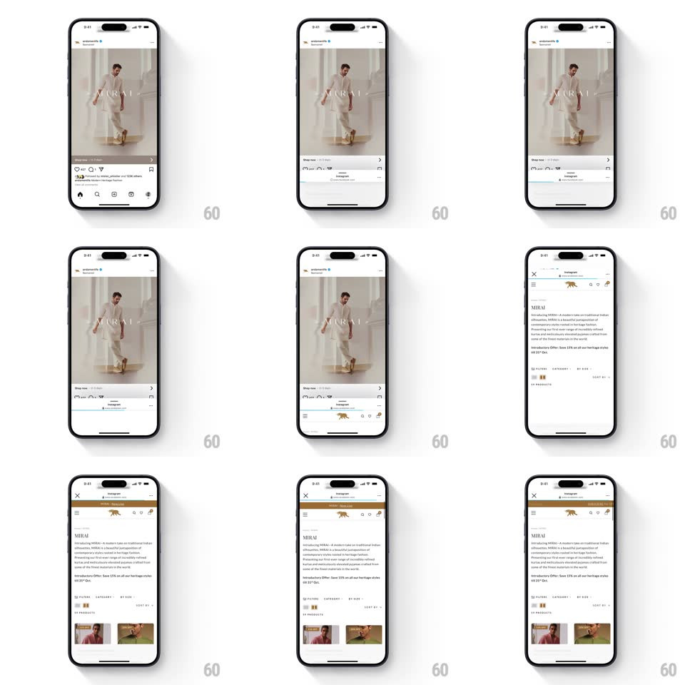

Media
Frame-by-frame

Rebuild this interaction 1:1: Instagram's in-app browser swipe-up - tapping a link in a post opens a bottom sheet showing a website preview strip over the dimmed feed; dragging the sheet upward expands it continuously until it commits into a full-screen webview with its own header (close X, domain, menu).

Rebuild this interaction 1:1: Instagram's in-app browser swipe-up - tapping a link in a post opens a bottom sheet showing a website preview strip over the dimmed feed; dragging the sheet upward expands it continuously until it commits into a full-screen webview with its own header (close X, domain, menu). ## Integration Integration: stack-agnostic spec - springs given as stiffness/damping, timed motions as duration + curve; map every value to your framework and animation library of choice. ## Scene Two states over the Instagram feed: a bottom sheet (~40% height) with the page preview and the post still visible above; and the full webview (X close, domain + lock row, site nav) covering the screen. The sheet's top edge carries a grabber. ## Motion spec Pattern: draggable bottom sheet with full-screen commit. - Open: the sheet slides up from the bottom (spring ~360/26, 400ms) while the feed dims to 60% and scales to 0.96. - Drag: the sheet tracks the finger 1:1; the feed's dim and scale deepen with sheet progress (dim 0.6 -> 0.9, scale 0.96 -> 0.92 mapped to progress). - Release past ~60% of screen height: the sheet springs to full screen (spring ~340/24, 380ms), its corner radius animates 16px -> 0, and the browser chrome (X, domain row, menu) fades in (200ms at 60% of the travel). - Release below: the sheet springs back to peek height; drag down from full reverses the whole mapping. - Dismiss: sheet slides down and the feed un-dims/un-scales on the same spring. ## Calibration - The feed never stops rendering behind the sheet - the scale-down keeps it alive. - Corner radius, dim, and chrome opacity are all driven by the same progress value. ## Reduced motion Sheet slides up/down without feed scaling; crossfade the chrome. ## Don't miss - The domain row shows the site's base URL with a lock - it appears only in the full-screen state. - The grabber sits in the sheet during peek and disappears when fully expanded.